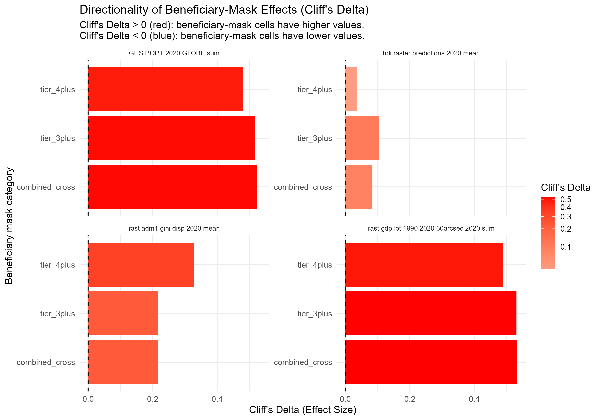
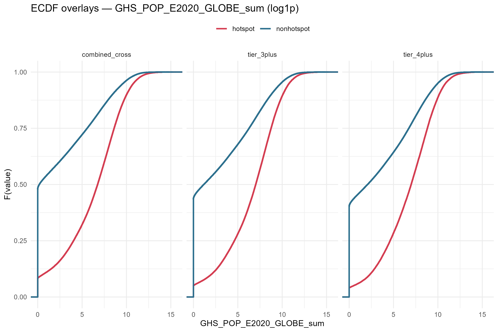
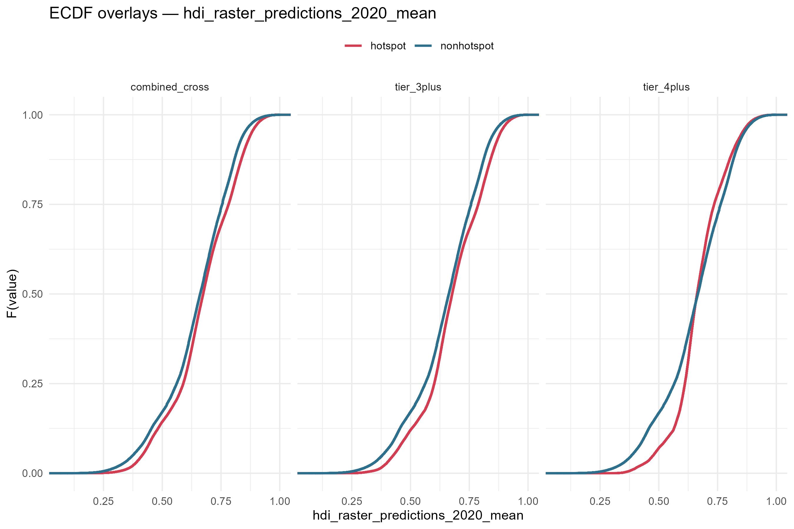
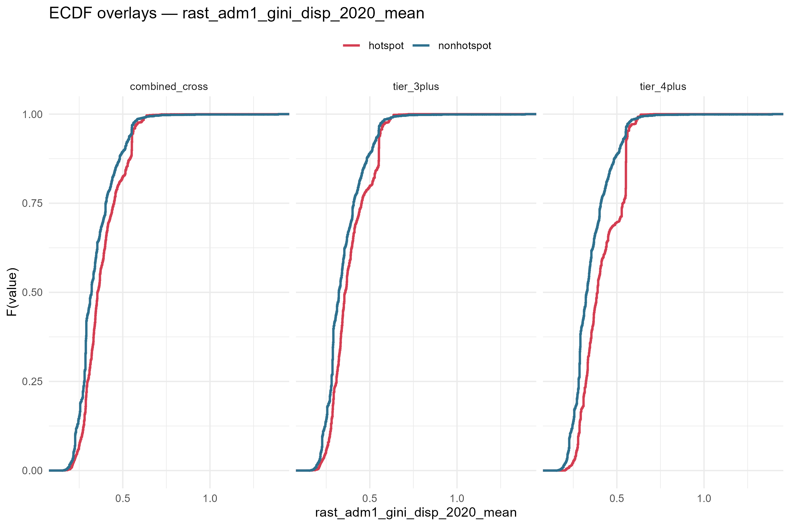
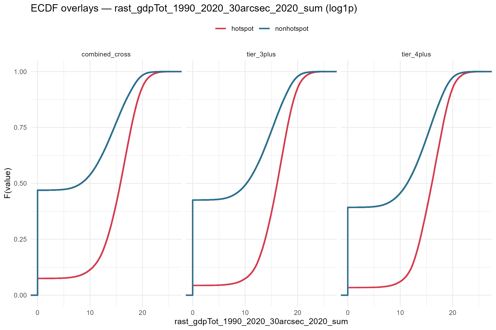
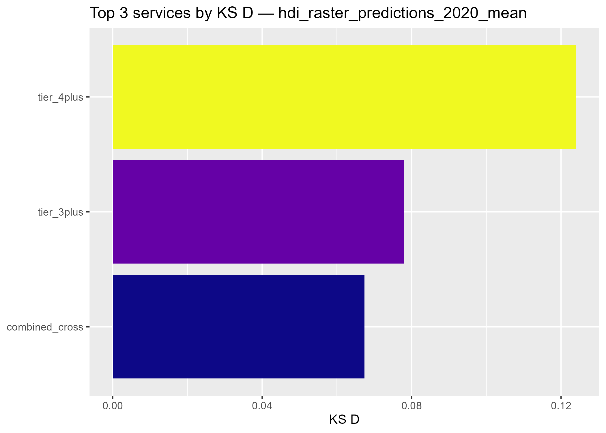
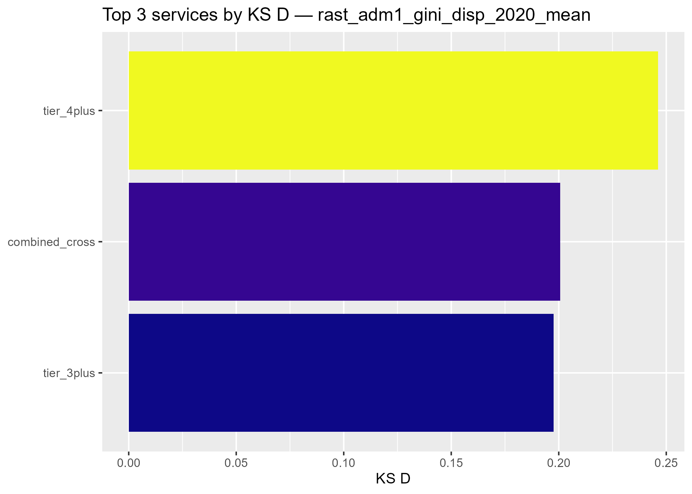
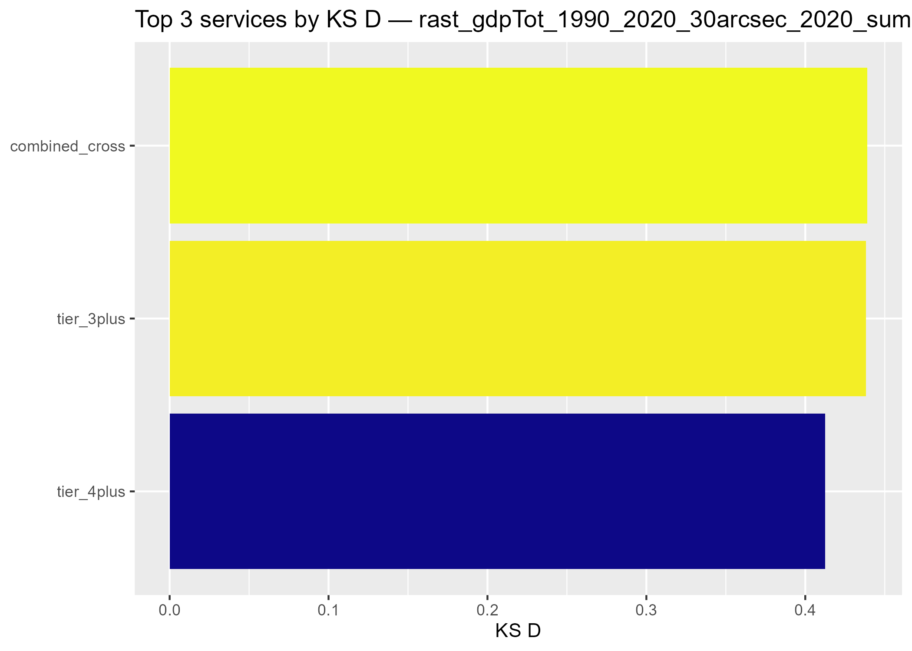
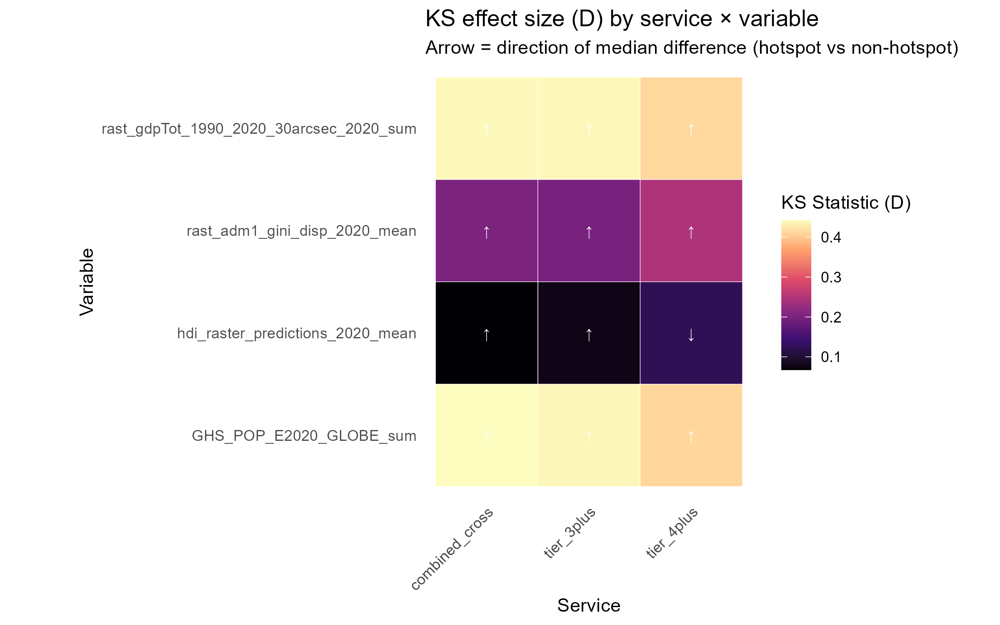

KS_CFG <- list(
categories = c(
combined_cross = "combined_cross",
tier_3plus = "tier_3plus",
tier_4plus = "tier_4plus"
),
coverage_threshold = 0.5,
vars_to_test = c(
"rast_gdpTot_1990_2020_30arcsec_2020_sum",
"GHS_POP_E2020_GLOBE_sum",
"hdi_raster_predictions_2020_mean",
"rast_adm1_gini_disp_2020_mean"
),
sampling = "none",
nonhot_cap = 100000L,
permute_n = 0,
compute_one_sided = TRUE,
adjust_method = "BH",
transform_default = "auto",
transform_by_var = c(
"rast_gdpTot_1990_2020_30arcsec_2020_sum" = "log1p",
"GHS_POP_E2020_GLOBE_sum" = "log1p"
),
ecdf_top_k = 3,
ecdf_service_selection = "all",
out_table = file.path(data_dir(), "processed", "tables",
paste0("ks_results_beneficiary_masks", params$output_suffix, ".csv")),
out_dir = out_plots(paste0("ks_beneficiary_masks", params$output_suffix))
)Beneficiary-Mask Socioeconomic Disproportionality (HDI / Gini / GDP)
v1.3.4 — Phase 4, 5-service redesign
Overview
Becky’s ask (Slack, 2026-08-05/06): apply Rich’s beneficiary union-coverage masks — combined_cross_category and the 3+/4+ nested hotspot-count tiers — to the HDI, Gini, and GDP rasters, to test whether beneficiary areas are socioeconomically disproportionate compared to everywhere else.
This notebook reuses the exact two-sample KS + Cliff’s Delta machinery built for the WHO chapter (analysis/KS_tests_hotspots.qmd, run_ks_hot_vs_non() in R/ks_hotspots.R), with one substitution: the grouping variable is not a service’s extreme-change hotspot definition, it is a spatial “inside the beneficiary buffer mask” flag, produced by zonal-extracting Rich’s fine-resolution (~30 arcsec) full_raster_extent_union_coverage.tif masks onto the 10km analysis grid (Python_scripts/zonal_extract_beneficiary_masks.py, run inside Rich’s Docker environment).
Comparison is direct in-mask vs. out-of-mask, not the WHO chapter’s “median background” tail comparison — there is no analogous “typical change” concept for a spatial buffer-membership flag; Becky’s question is simply mask vs. everywhere else.
Threshold: full_raster_extent_union_coverage.tif gives a fine-resolution 0/1 mask; zonal-extracting it onto a coarser 10km cell gives a fraction of that cell’s area covered by the mask. A 10km cell is flagged “inside” the beneficiary area if that fraction is ≥ 0.5 (majority rule) — see KS_CFG$coverage_threshold below to adjust.
Setup
Config
Load grid + coverage fractions, apply standard land-base filters
Same exclusions used throughout this project’s grid-based analyses (Antarctica / Seven seas / Lakes / Rock & Ice) so the land base here matches the already-verified 1,372,621-cell denominator used elsewhere in the 5-service redesign.
gpkg <- file.path(data_dir(), "processed", params$input_gpkg)
stopifnot(file.exists(gpkg))
lyrs <- sf::st_layers(gpkg)$name
grid_sf <- sf::st_read(gpkg, layer = lyrs[1], quiet = TRUE)
grid <- sf::st_drop_geometry(grid_sf)
stopifnot("grid_fid" %in% names(grid), grid$grid_fid |> duplicated() |> any() == FALSE)
if ("continent" %in% names(grid)) {
grid <- dplyr::filter(grid, !continent %in% c("Antarctica", "Seven seas (Open Ocean)"))
}
if ("WWF_biome" %in% names(grid)) {
grid <- dplyr::filter(grid, !WWF_biome %in% c("Lakes", "Rock & Ice"))
}
n_land_cells <- nrow(grid)
message("Land base after standard exclusions: ", n_land_cells, " cells")Load beneficiary-mask coverage fractions
coverage <- readr::read_csv(file.path(data_dir(), "processed", params$coverage_csv),
show_col_types = FALSE)
stopifnot(all(c("grid_fid","category","coverage_frac") %in% names(coverage)))
# sanity: every requested category actually present
missing_cats <- setdiff(unname(KS_CFG$categories), unique(coverage$category))
if (length(missing_cats)) stop("Missing categories in coverage CSV: ", paste(missing_cats, collapse = ", "))Validation: cross-check against the independently-computed fine-resolution area %
Before trusting this join, cross-check it against outputs/tables/ hotspot_5service_beneficiary_area_pct.csv (2026-08-05), computed via a completely independent path — terra::expanse() directly on the fine-resolution rasters, no 10km grid, no exact_extract, no Python zonal-stats pipeline at all. Because the analysis grid is equal-area, % of land cells flagged (post-threshold) and the raw area-weighted mean coverage fraction (pre-threshold) should both land close to that reference number. A large mismatch would mean the grid_fid join is wrong — this project’s history has 4 prior incidents of exactly that failure mode, so this check is load-bearing, not decorative.
ref_pct <- readr::read_csv(project_dir("outputs","tables","hotspot_5service_beneficiary_area_pct.csv"),
show_col_types = FALSE) |>
dplyr::filter(buffer_type == "union") |>
dplyr::mutate(category_short = dplyr::case_match(
category,
"combined_cross_category_beneficiaries" ~ "combined_cross",
"hotspot_count_3plus_beneficiaries" ~ "tier_3plus",
"hotspot_count_4plus_beneficiaries" ~ "tier_4plus",
"hotspot_count_1plus_beneficiaries" ~ "tier_1plus",
"hotspot_count_2plus_beneficiaries" ~ "tier_2plus",
"hotspot_count_5plus_beneficiaries" ~ "tier_5plus",
"water_overlap_downstream_beneficiaries" ~ "water",
"access_overlap_travel_time_beneficiaries" ~ "access",
.default = NA_character_
)) |>
dplyr::select(category_short, ref_pct_of_land = pct_of_total_land)
check <- coverage |>
dplyr::semi_join(grid, by = "grid_fid") |>
dplyr::group_by(category) |>
dplyr::summarise(
n_land_cells = dplyr::n(),
mean_coverage_pct = 100 * mean(coverage_frac, na.rm = TRUE),
pct_flagged_ge50 = 100 * mean(coverage_frac >= KS_CFG$coverage_threshold, na.rm = TRUE),
.groups = "drop"
) |>
dplyr::left_join(ref_pct, by = c("category" = "category_short")) |>
dplyr::mutate(
diff_meancov_vs_ref = mean_coverage_pct - ref_pct_of_land,
diff_flagged_vs_ref = pct_flagged_ge50 - ref_pct_of_land
)
knitr::kable(check, digits = 2)| category | n_land_cells | mean_coverage_pct | pct_flagged_ge50 | ref_pct_of_land | diff_meancov_vs_ref | diff_flagged_vs_ref |
|---|---|---|---|---|---|---|
| access | 1372621 | 35.31 | 35.99 | 36.65 | -1.34 | -0.66 |
| combined_cross | 1372621 | 23.05 | 23.41 | 23.56 | -0.51 | -0.15 |
| tier_1plus | 1372621 | 55.04 | 55.98 | 56.80 | -1.76 | -0.82 |
| tier_2plus | 1372621 | 26.04 | 26.44 | 26.74 | -0.70 | -0.30 |
| tier_3plus | 1372621 | 12.52 | 12.70 | 12.81 | -0.29 | -0.11 |
| tier_4plus | 1372621 | 4.31 | 4.36 | 4.40 | -0.09 | -0.04 |
| tier_5plus | 1372621 | 0.03 | 0.03 | 0.03 | 0.00 | 0.00 |
| water | 1372621 | 30.71 | 31.18 | 30.93 | -0.22 | 0.25 |
# hard stop if any target category is wildly off (>5 pct-point) from the
# independent reference -- would indicate a grid-identity bug, not just
# expected 10km-vs-30arcsec discretization noise
target_cats <- unname(KS_CFG$categories)
bad <- check |> dplyr::filter(category %in% target_cats, abs(diff_meancov_vs_ref) > 5)
if (nrow(bad) > 0) {
print(bad)
stop("Coverage validation failed: >5pp mismatch vs independent area-pct reference for a target category.")
}
message("Validation passed: all target categories within 5pp of the independent area-pct reference.")Build hotspot / non-hotspot tables (in-mask vs. out-of-mask)
grid_vars <- grid |>
dplyr::select(grid_fid, dplyr::any_of(KS_CFG$vars_to_test))
stack <- purrr::map_dfr(names(KS_CFG$categories), function(cat_label) {
cat_id <- KS_CFG$categories[[cat_label]]
cov_cat <- coverage |>
dplyr::filter(category == cat_id) |>
dplyr::select(grid_fid, coverage_frac)
grid_vars |>
dplyr::inner_join(cov_cat, by = "grid_fid") |>
dplyr::mutate(
service = cat_id,
flag = coverage_frac >= KS_CFG$coverage_threshold
)
})
hotspots_df <- dplyr::filter(stack, flag)
non_hotspots_df <- dplyr::filter(stack, !flag)
stopifnot(nrow(hotspots_df) > 0, nrow(non_hotspots_df) > 0)
dplyr::count(stack, service, flag) service flag n
1 combined_cross FALSE 1051270
2 combined_cross TRUE 321351
3 tier_3plus FALSE 1198365
4 tier_3plus TRUE 174256
5 tier_4plus FALSE 1312761
6 tier_4plus TRUE 59860KS tests: beneficiary-mask vs. non-mask
dir.create(dirname(KS_CFG$out_table), recursive = TRUE, showWarnings = FALSE)
ks_res <- run_ks_hot_vs_non(
hotspots_df = hotspots_df,
inverse_df = non_hotspots_df,
vars = KS_CFG$vars_to_test,
sampling = KS_CFG$sampling,
nonhot_cap = KS_CFG$nonhot_cap,
permute_n = KS_CFG$permute_n,
compute_one_sided= KS_CFG$compute_one_sided,
adjust_method = KS_CFG$adjust_method,
out_csv = KS_CFG$out_table
)
dplyr::glimpse(ks_res, width = 120)Rows: 12
Columns: 24
$ service <chr> "combined_cross", "tier_3plus", "tier_4plus", "tier_4plus", "tier_3plus", "combined_cross", …
$ var <chr> "GHS_POP_E2020_GLOBE_sum", "GHS_POP_E2020_GLOBE_sum", "GHS_POP_E2020_GLOBE_sum", "hdi_raster…
$ D <dbl> 0.44231215, 0.43669121, 0.41138866, 0.12406035, 0.07796994, 0.06735211, 0.24616298, 0.200683…
$ p_value <dbl> 0, 0, 0, 0, 0, 0, 0, 0, 0, 0, 0, 0
$ p_perm <dbl> NA, NA, NA, NA, NA, NA, NA, NA, NA, NA, NA, NA
$ n_hot <int> 321351, 174256, 59860, 59019, 170871, 310144, 59815, 320924, 174035, 321351, 174256, 59860
$ n_non <int> 1051270, 1198365, 1312761, 917690, 805838, 666565, 1300207, 1039098, 1185987, 1051270, 11983…
$ mean_hot <dbl> 1.235876e+04, 1.240962e+04, 1.400837e+04, 6.698747e-01, 6.777236e-01, 6.695904e-01, 4.120241…
$ mean_non <dbl> 3.687935e+03, 4.744851e+03, 5.339871e+03, 6.521754e-01, 6.480544e-01, 6.456396e-01, 3.521766…
$ median_hot <dbl> 8.493319e+02, 1.115550e+03, 1.079671e+03, 6.626831e-01, 6.770699e-01, 6.740698e-01, 3.890000…
$ median_non <dbl> 1.909378e-01, 2.206633e+00, 6.908929e+00, 6.660159e-01, 6.629320e-01, 6.612924e-01, 3.280000…
$ q10_hot <dbl> 7.859034e-01, 6.365377e+00, 9.339811e+00, 5.387392e-01, 4.796289e-01, 4.583791e-01, 2.810000…
$ q90_hot <dbl> 2.244266e+04, 2.376667e+04, 2.530096e+04, 8.161928e-01, 8.526984e-01, 8.488477e-01, 5.530000…
$ q10_non <dbl> 0.0000000, 0.0000000, 0.0000000, 0.4381438, 0.4354389, 0.4335729, 0.2320000, 0.2270000, 0.23…
$ q90_non <dbl> 4.531978e+03, 6.381585e+03, 7.918912e+03, 8.291289e-01, 8.227276e-01, 8.183635e-01, 5.150000…
$ median_delta <dbl> 8.491410e+02, 1.113343e+03, 1.072762e+03, -3.332765e-03, 1.413789e-02, 1.277739e-02, 6.09999…
$ mean_delta <dbl> 8.670824e+03, 7.664770e+03, 8.668496e+03, 1.769925e-02, 2.966915e-02, 2.395086e-02, 5.984749…
$ auc <dbl> 0.7615443, 0.7583900, 0.7401978, 0.5176038, 0.5518543, 0.5421818, 0.6639504, 0.6086606, 0.60…
$ cliffs_delta <dbl> 0.52308867, 0.51677999, 0.48039559, 0.03520764, 0.10370862, 0.08436363, 0.32790074, 0.217321…
$ p_hot_greater <dbl> 1.00000000, 0.99999915, 0.99999973, 0.00000000, 0.98845404, 0.96844419, 0.05716043, 0.012576…
$ p_hot_less <dbl> 0, 0, 0, 0, 0, 0, 0, 0, 0, 0, 0, 0
$ p_adj <dbl> 0, 0, 0, 0, 0, 0, 0, 0, 0, 0, 0, 0
$ p_hot_greater_adj <dbl> 1.000000000, 1.000000000, 1.000000000, 0.000000000, 0.988454036, 0.988454036, 0.057160429, 0…
$ p_hot_less_adj <dbl> 0, 0, 0, 0, 0, 0, 0, 0, 0, 0, 0, 0Visualizations and exports
Results table
| Category | Variable | KS_Stat_D | Cliffs_Delta | p_adj | mean_hot | mean_non | median_hot | median_non | n_hot | n_non |
|---|---|---|---|---|---|---|---|---|---|---|
| combined_cross | GDP | 0.439 | 0.533 | 0 | 2.397854e+08 | 46993778.567 | 7156992.979 | 3915.441 | 321351 | 1051270 |
| tier_3plus | GDP | 0.438 | 0.531 | 0 | 2.574808e+08 | 68085132.731 | 9826279.961 | 28509.301 | 174256 | 1198365 |
| tier_4plus | GDP | 0.412 | 0.489 | 0 | 2.612939e+08 | 84415494.071 | 9184991.635 | 81895.000 | 59860 | 1312761 |
| tier_4plus | Gini Index | 0.246 | 0.328 | 0 | 4.120000e-01 | 0.352 | 0.389 | 0.328 | 59815 | 1300207 |
| combined_cross | Gini Index | 0.201 | 0.217 | 0 | 3.810000e-01 | 0.347 | 0.355 | 0.321 | 320924 | 1039098 |
| tier_3plus | Gini Index | 0.198 | 0.217 | 0 | 3.860000e-01 | 0.350 | 0.359 | 0.322 | 174035 | 1185987 |
| tier_3plus | HDI | 0.078 | 0.104 | 0 | 6.780000e-01 | 0.648 | 0.677 | 0.663 | 170871 | 805838 |
| combined_cross | HDI | 0.067 | 0.084 | 0 | 6.700000e-01 | 0.646 | 0.674 | 0.661 | 310144 | 666565 |
| tier_4plus | HDI | 0.124 | 0.035 | 0 | 6.700000e-01 | 0.652 | 0.663 | 0.666 | 59019 | 917690 |
| combined_cross | Population | 0.442 | 0.523 | 0 | 1.235876e+04 | 3687.935 | 849.332 | 0.191 | 321351 | 1051270 |
| tier_3plus | Population | 0.437 | 0.517 | 0 | 1.240962e+04 | 4744.851 | 1115.550 | 2.207 | 174256 | 1198365 |
| tier_4plus | Population | 0.411 | 0.480 | 0 | 1.400837e+04 | 5339.871 | 1079.671 | 6.909 | 59860 | 1312761 |
Preview








